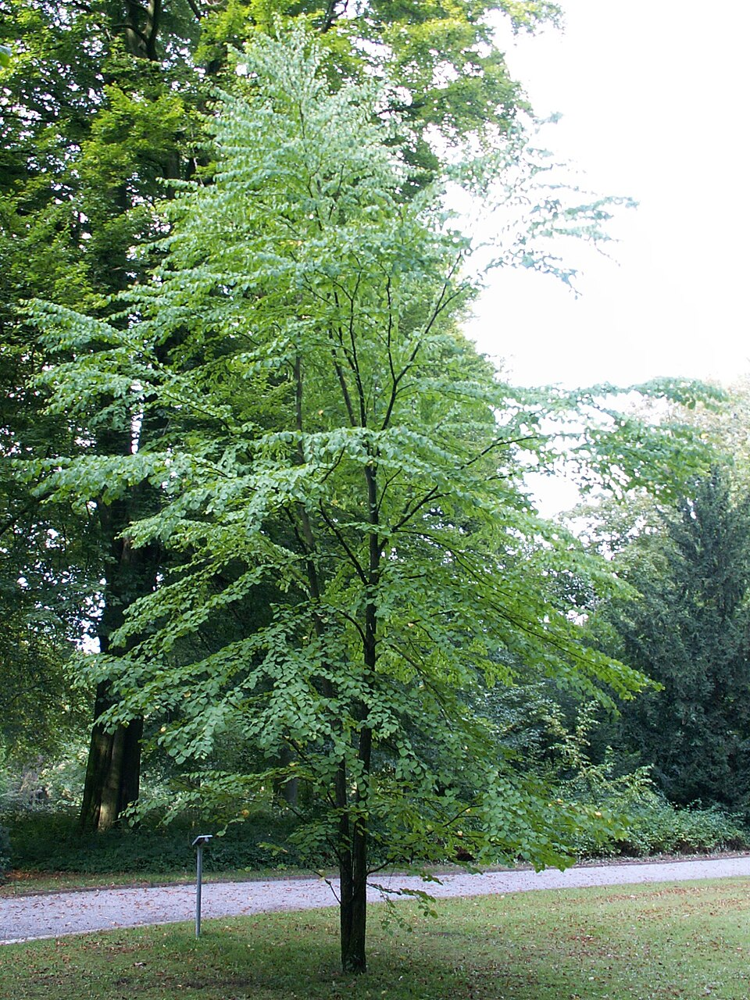

Cercidiphyllum — Katsura (Cercidiphyllum)
An 80-million-year-old survivor that smells of caramel and burnt sugar when its leaves fall — the gentle giant of Asia's ancient forests, living a thousand years on nothing but moisture and patience.
Combat flavor
Soft wood means rapid, light strikes — fast attack speed, low per-hit damage. Its 80-million-year lineage could power a Support ability: "Ancient Resilience" — periodic regeneration that lets it survive hits that would fell younger trees, flavoured by its near-mythical longevity.
Real-world facts
Typical / max height15–20 m in cultivation; up to 45 m in wild East Asian specimens — one of the largest hardwoods in Asia
LifespanUp to 1,000 years; living-fossil genus dating back 80+ million years (pre-dates many modern tree families)
WoodLight and soft; air-dry density ~430 kg/m³; fine-grained; used in Japan for cabinetry, panelling and interior joinery
Growth speedFast (can put on 5 m of height in ten years under good conditions)
Ecology / notable traitsNative to Japan and China; sole surviving genus of family Cercidiphyllaceae (living fossil); very sensitive to drought — needs permanently moist, deep soil; produces a distinctive sweet caramel/cotton-candy scent from fallen leaves (due to maltol); rarely troubled by pests or disease; no thorns or toxicity; globally notable (restricted native range, not cultivated in huge numbers outside gardens)
Gallery
